Trusler
En trussel er et vedvarende problem som vil skape trøbbel for spillerpersonene om ingen tar tak i det.
Når du innser eller bestemmer at noe – en SLP, et monster, en situasjon – kommer til å bli et problem som forverres eller dukker opp igjen, er det sannsynligvis verdt å skrive det ut som en trussel.
Det er ikke strengt nødvendig å skrive ut trusler, men det gjør ting lettere å holde styr på etter hvert som kampanjeverdenen blir mer sammensatt. Spillederens playbook har sider laget for å hjelpe deg å holde oversikt over trusler.
Ikke alle SLP-er, monstre eller situasjoner trenger å være (eller bør være) trusler. Kjempeedderkoppene mellom spillerpersonene og de gamle skaperruinene? Hvis de ikke blir verre etter hvert som tiden går, er de sannsynligvis bare en fare å møte dersom spillerpersonene vil utforske ruinene.
Med andre ord: ikke bry deg med å skrive ut en trussel med mindre du vet at den kommer til å bli en stor sak.
Her er et eksempel på en ferdig utskrevet trussel:
NIA (joker)
Instinkt: å bli venn med edderkopper
Ung jente, edderkopprørt etter prøvelsen hos Edderkoppenes Mor (Mother-of-Spiders).
Blodwens niese; datter av Cadoc (se Bystyret).
Nia er et eksempel på en SLP som har blitt en trussel. Hun er ingen skurk, ikke engang en fare – hun er en liten jente, Blodwens niese, en spillerpersonene reddet – men båndet hennes til Edderkoppenes Mor gjør henne til en kilde til fremtidig trøbbel. Hun er en trussel.
Her er et annet eksempel:
TORNTOMMEL (THORNTHUMB) (magisk vesen)
Instinkt: å skaffe seg ting
Holdt til i Den Grønne Herrens grav.
Prøvde å stjele fra spillerpersonene, men de tok ham. Hjalp dem å drepe Sajra.
Lovet motvillig Vahid å ikke prøve å stjele fra, skade eller fange dem.
Begjærer Sinnsjuvelen. Redd for Rhianna. Tror Caradoc er et lett offer. Blodwen står i gjeld til ham for blomsten han ga henne.
Når du sender bud til Torntommel gjennom ånder, fugler eller dyr, si når og hvor i Skogen du vil møtes. Til avtalt tid og sted, slå +INT: på 10+ dukker han opp; på 7-9 dukker han opp, men spillederen velger 1:
- Han er fornærmet over innkallingen
- Du står nå i gjeld til ham
- En gjeld han skylder deg er nå innfridd
Torntommel var et monster spillerpersonene møtte i spillet. De fanget ham, allierte seg med ham, ble forrådt av ham og presset frem et løfte om at han skulle la dem være. Men han er fortsatt der ute, og han er typen som bærer nag.
Han er en trussel.
Og et siste eksempel:
ANWEN (skurk)
Instinkt: å opprettholde orden for enhver pris
Forvist fra Stonetop for mange år siden etter å ha forgiftet folk (svake folk) under en hard vinter (færre munner å mette). Driver en kneipe/et bordell i Gordins Gruve; har fingrene i mye. Ropr (beist, å beholde Anwens gunst) er hennes
nestkommanderende. Har en svakhet for Iona (joker, å leve behagelig).
Spilledertrekk:
- Finn noens svake punkt
- Ofre en annen for å nå et mål
- Få noen drept
Anwen har ikke dukket opp på scenen ennå. Hun var en spillers svar på «Hvem er den verste personen du kjenner til i Gordins Gruve, og hvorfor er de så skremmende?» Hun er ikke et problem ennå, men spillerpersonene er på vei til Gordins Gruve, og der blir hun garantert det. Hun og håndlangerne hennes er trusler.
Å skrive ut trusler er en måte å holde styr på løse tråder og ulmende konflikter, og det hjelper deg å skildre en rik og mystisk verden.
Trusler gir deg problemer og dårlige utfall å slippe løs på spillerpersonene, slik at det blir lettere å krydre livene deres med eventyr. Og en truselbeskrivelse gjør det lettere å skildre trusselen med integritet, noe som hjelper deg å spille for å se hva som skjer.
Når du skriver ut trusler
Trusler er forberedelse: du skriver dem ut mellom spilløktene. Når du skriver ut en trussel, tar du reelle, bindende avgjørelser om den, og det krever ettertanke og omhu.
Ikke gjør dette under spillet.
Nærmere bestemt bør du skrive ut trusler …
Etter presentasjonene
Gå gjennom notatene dine fra første økt Kom i gang, og se etter problemer spillerne har etablert. Skriv disse ut som trusler med så mye detalj som gir mening.
Under presentasjonene fortalte spillerne meg om et nylig crinwin-raid, om Blodwens dominerende mor, Tegwen, og om Sinnsjuvelen. Jeg fører dem inn i trusselsporene (som pøbel, joker, og magisk vesen), men venter med å utdype dem til jeg vet mer.
Når Årstidene Skifter
Trekket Årstidene Skifter ber deg av og til introdusere eller forverre en trussel, eller sier at det myldrer av trusler. Det kan få deg til å skape en ny trussel, en spillerpersonene ikke har møtt før. Trusselens type Å skrive en trussel, instinkt 2 Threat tracker og dystre varsler 5 Impending doom hjelper deg å utdype kroken i et eventyr som henger sammen med den.
Vahid slo 7-9 på det første Årstidene Skifter, som betyr at deres første eventyr vil dreie seg om en trussel. Jeg bestemte at crinwinene har kommet under innflytelse av en swyn (en stor, hypnotisk slange med apeansikt), og at de stjeler barn for å utvide swynens samling.
Swynen er den egentlige kilden til trøbbelet, så jeg skriver den ut som en trussel (en skurk).
Etter en økt
Hvis noen introduserte et element (SLP, monster, situasjon osv.) i løpet av en økt, og det kan skape trøbbel senere, skriv det ut som en trussel mens det ennå er friskt i minnet. Eller i det minste noter det, og skriv det ut fullt senere. Det vil minne deg på å ta det opp igjen i senere økter.
Etter det første eventyret vendte spillerpersonene tilbake for å utforske den gamle graven, og Blodwen forstyrret ånden til den mumifiserte Grønne Herren som lå gravlagt der. Selv om den stort sett holder seg i sitt salige, konstruerte etterliv, kan den absolutt skape trøbbel for spillerpersonene senere.
Jeg skriver den ut som en trussel (et magisk vesen).
Når du forbereder et eventyr
Når du bare vet at en ny trussel kommer til å dukke opp, og du allerede har en idé om hvordan den ser ut, er det lurt å skrive den ut før neste økt. Det kan skje når spillerne forteller deg at de skal gjøre X, og du vet at X betyr å støte på Y, og Y føles som trøbbel. Eller det kan skje når du avslutter en økt med en cliffhanger (som et bomslag på hjemmefronten, eller noe skremmende som nærmer seg), og du mellom øktene bestemmer deg for å introdusere en ny trussel.
På slutten av forrige økt snakket spillerpersonene (vel, Vahid) om å dra til De Tre Heksekretsers Sjø for å finne en del av Sinnsjuvelens kropp. Jeg synes det ville vært kult med en gruppe åsfolk som vier seg til å holde folk borte fra sjøene, og til å holde sjøenes redsler innestengt. Jeg kaller dem Den Hvite Hånd og skriver dem ut som en trussel (en institusjon).
Å skrive en trussel
Følg disse trinnene for å skrive ut en trussel.
De viktigste trinnene kommer først; de senere trinnene er valgfrie.
1) Gi trusselen et navn og en type.
2) Før den inn i riktig trusselspor.
3) Gi den et instinkt, om den ikke allerede har et.
4) Skriv en kort beskrivelse, med beslektede trusler og SLP-er.
5) Hvis den har fremdrift: skriv ut dens truende undergang og dystre varsler.
6) Valgfritt: skriv noen spørsmål om innsats.
7) Valgfritt: velg eller skriv spilledertrekk som utdyper dens oppførsel/evner.
8) Valgfritt: skriv egne spillertrekk.
1 Navn og type
Gi trusselen et enkelt navn som lett skiller den fra andre trusler du allerede følger med på.
Hver trussel har også en type, som beskriver dens grunnleggende natur og dens plass i verden og i den pågående historien. Det finnes åtte ulike trusseltyper, beskrevet på de følgende sidene.
Som regel vil det være opplagt hvilken type en ny trussel hører til. Om det ikke er opplagt, kast et blikk på trekkene for hver type og velg den som passer best.
Trusseltyper i spill
Hver trusseltype har en rekke spilledertrekk som gjenspeiler hvordan den typen trussel vanligvis skaper trøbbel. Du kan bruke en trussels særtrekk når som helst trusselen er involvert, på scenen eller utenfor. Du er ikke begrenset til disse trekkene – du kan selvsagt fortsatt bruke alle de vanlige spilledertrekkene dine, som avslør en uvelkommen sannhet eller sett dem i knipe – men trusseltrekkene er god inspirasjon for hvordan den typen trussel handler.
Til vårt første eventyr har jeg bestemt at en swyn har flyttet inn i (eller kommet opp fra?) noen skaperruiner i Storskogen (the Great Wood). Den har fått crinwinene i nærheten under sin hypnotiske kontroll, og de har bortført barn til swynens samling.
Swynene var opprinnelig skapninger laget av De Grønne Herrene, som alle har navn med slavisk preg. Jeg begynner med «Tajra», justerer det litt og skriver «Sajra, swynen» som navnet.
Sajra swynen er en stor, hypnotisk slange med apehode, narsissistisk, en samler med kresen smak, i stand til å gjøre de viljesvake til krypende tjenere. Når jeg ser på listen over trusseltyper, vurderer jeg kort å gjøre den til et magisk vesen, men det føles ikke riktig. Nei, den er ganske tydelig en skurk.
trusseltype
Plage
Plager er ikke mennesker, monstre eller håndfaste ting. De er atferd, omstendigheter eller tilstander som får folk til å lide, bringer dem i konflikt, eller bare får dem til å bekymre seg og gruble.
Plager kan ramme bare en enkeltperson eller to (til og med en bestemt spillerperson), en gruppe, en befolkning eller en hel region.

Spilledertrekk for plager:- Forverres eller tilta i fart
- Spre seg til andre / dra andre med seg
- Mutere, ta en ny form/side
- Tære på noe/noen
- Frata noen ære/verdighet
- Drive noen til desperasjon
- Rettferdiggjøre egoisme, forsømmelse
- Drive en kile mellom folk
- Skape vrangforestillinger, stahet, dårskap
- Så panikk eller fortvilelse
- Utløse mangel, hamstring
- Fremkalle vold, hat, skyldfordeling
Eksempler på plager:
- Svartkopper (Instinkt: å smitte og spre seg)
- Braiths feide med Thecla (Instinkt: å få folk til å velge side)
- Tørken (Instinkt: å tømme ressursene)
- Kvikksølvbesmittelse (Instinkt: å skape vrangforestillinger)
- «En kvinnes plass» (Instinkt: å legge begrensninger på alle)
- Harme mot åsfolket (Instinkt: å hindre samarbeid)
- Slavehandelen (Instinkt: å frata folk deres menneskeverd) trusseltype
Beist
Beist er monstre, dyr eller SLP-er drevet av grunnleggende behov og instinkt.
Som oftest er de bokstavelig talt beist (naturlige eller ikke). De kan være smarte, kanskje like smarte som eller smartere enn folk flest, men de følger magen eller lendene eller sitt store, dumme ego.
En beist-trussel kan være én bestemt skapning, en familie/flokk/hjord eller til og med en hel art.
Spilledertrekk for beist:
- Dukke opp der det ikke er ønsket
- Snike seg etter eller forfølge bytte
- Beskytte hjemmet eller familien sin
- Vise styrke, aggresjon
- Bygge eller utvide et rede/hi/tilholdssted
- Endre omgivelsene sine
- Flykte, få panikk eller rase
- Fortære noe (eller noen)
- Vokse eller minke, i størrelse eller antall
Eksempler på beist:
- Hulebjørnene (Instinkt: å fylle magen, beskytte ungene)
- Visentflokken, beskyttet av en pakt med spillerpersonene (Instinkt: å fare frem ustraffet)
- Grigor Fjellkløyver (Instinkt: å sørge for at alle vet hvor fantastisk han er)
- Frythrancene (Instinkt: å herske over territoriet sitt)
- Nailadd-svermen (Instinkt: å formere seg og spre seg)
- Orub hagren (Instinkt: å tvangsmessig forme omgivelsene sine) trusseltype
Institusjon
Institusjoner er personer, grupper eller posisjoner som har makt i et samfunn (eller flere). De kan være formelle, som en kult eller en styresmakt, eller bare posisjoner folk har respekt for (som et eldreråd). En institusjon har ofte en bestemt leder, men ikke alltid.
En institusjon er større enn enkeltpersonene den består av, og instinktet dens gjenspeiler institusjonens formål eller oppførsel som helhet. Men den handler gjennom enkeltpersoner, som regel slike som har interesse av at innflytelsen dens består.
Spilledertrekk for institusjoner:
- Påvirke opinionen
- Sette noen på plass
- Endre en regel, lov eller skikk
- Skaffe seg pressmidler, ressurser, innflytelse
- Fordømme noe eller noen
- Støtte en handlingsvei
- Verve nye medlemmer eller håndlangere
- Krangle seg imellom
- Skifte ledelse
- Forhandle frem en avtale eller traktat
- Sende noen andre for å gjøre skittarbeidet
Eksempler på institusjoner:
- Aratis' prestestand (Instinkt: å bevare sivilisasjonen, for enhver pris)
- Myrkants (Marshedge) bystyre (Instinkt: å opprettholde status quo)
- Azm Har-kulten (Instinkt: å hamstre kunnskap, makt, mennesker)
- Det nyfødte bystyret (Instinkt: å holde spillerpersonene i sjakk)
- Ferrittforbundet (Instinkt: å undergrave Bossenes kontroll) trusseltype
MacGuffin
MacGuffiner er ting – gjenstander, steder, til og med hemmeligheter – som vekker konflikt. En MacGuffin kan selv ha makt til å skape trøbbel, eller den kan rett og slett være noe verdifullt som folk slåss om.
Hvis det finnes en ting i spillet ditt som du tror er en kilde til trøbbel, er det sannsynligvis en MacGuffin.
Når du velger et instinkt for en MacGuffin, fokuser på hvordan den skaper trøbbel snarere enn hva den gjør. Værhanen av aetherium styrer været, men den er en trussel fordi andre begjærer den.

Spilledertrekk for MacGuffiner:- Avsløre en hemmelighet
- Trekke oppmerksomhet mot seg selv
- Peke mot noe annet
- Skape misunnelse/frykt/splid
- Tynge, bli en byrde
- Bli mål for tyveri
- Forsvinne
- Utføre funksjonen sin, hensynsløst
- Svikte i verst tenkelige øyeblikk
- Sette sitt preg på noen eller noe
- Bli til noe større, eller mindre
Eksempler på MacGuffiner:
- Krønikens hvelv med artefakter (Instinkt: å huse ondskap)
- Yevenas Kunnskapstre (Instinkt: å avsløre farlige hemmeligheter)
- Det Blodherdede Sverdet (Instinkt: å oppmuntre til vold)
- Værhanen av aetherium (Instinkt: å vekke sjalusi)
trusseltype
Magisk vesen
Magiske vesener omfatter ånder, mange
fae, Tingene Der Nede (the Things Below), til og med guder eller deres utsendinger. De er vesener som lever og ånder i magi og makt, og for dem er hverdagslige behov som mat og ly fremmede eller overflødige.
Magiske vesener er ofte bundet av underlige, tilsynelatende vilkårlige begrensninger og lover. De må ofte påvirke verden i det skjulte eller gjennom mellommenn.
Spilledertrekk for magiske vesener:
- Spionere på noen, usett/på avstand
- Fornemme sterke lengsler/følelser
- Vise seg i glimt, drømmer, syner
- Tilby tjenester, hemmeligheter, makt
- Kreve en ed eller et offer
- Legge en forbannelse
- Vri en avtale til sin fordel
- Sende ut håndlangere for å gjøre som den byr
- Forme omgivelsene sine etter sin natur
- Forfølge fremmedartede mål
- Nære rivalisering med lignende makter
- Vokse eller minke i styrke
Eksempler på magiske vesener:
- Hec'tumel, Den Slangende! Blek Slange! Døden Er Dens Øyne! (Instinkt: å kvele liv, håp og lys)
- Edderkoppenes Mor (Instinkt: å se sine mange barn spre seg)
- Ånden i et falskt avgudsbilde (Instinkt: å slite seg løs fra sitt fangenskap)
- Faeen Morgenrøde (Blush-of-Dawn) (Instinkt: å bli tilbedt)
- Nikalors skygge (Instinkt: å nyte kjødets gleder)
- Yevena, mumifisert Grønn Herre (Instinkt: å bevare sitt praktfulle etterliv) trusseltype
Pøbel
En pøbel er en gruppe, med eller uten leder, som holdes sammen av følelser, blod eller omstendigheter snarere enn av noe felles formål eller mål.
En pøbels instinkt gjenspeiler hvordan gruppen oppfører seg som helhet. Enkeltpersoner i gruppen deler ikke nødvendigvis instinktet, og kan til og med motsette seg det.

Spilledertrekk for pøbel:- Vokse eller samle seg i antall
- Gjøre krav på territorium eller ressurser
- Komme under en (ny) leders innflytelse
- Gjennomgå indre uro
- Vise styrke/antall
- Utrope en fiende eller en allianse
- Vende seg mot en av sine egne
- Overmanne en stilling eller en svakere gruppe
- Ødelegge, plyndre, herje, brenne
- Nekte å la seg styre/demme inn
- Spres, splittes, flykte
Eksempler på pøbel:
- Flyktninger fra åsfolket (Instinkt: å ikke passe inn)
- Slaveopprøret (Instinkt: å kaste av seg lenkene)
- Daedre den Rødes banditter (Instinkt: å gjøre hva faen de vil)
- De Syv Brødrene, festglade fae (Instinkt: å dra andre med inn i sine hemningsløse utskeielser)
- Heledds familie (Instinkt: å slutte rekkene og beskytte sine egne)
- Den hemmelige kulten rundt det falske avgudsbildet (Instinkt: å jage etter makt, rikdom og respekt) trusseltype
Skurk
Skurker er rett og slett de verste. De er enkeltpersoner med den hensynsløsheten, drivkraften og makten som skal til for å gjøre livet forferdelig for et hvilket som helst antall andre mennesker.
Skurker handler ofte gjennom håndlangere eller mellommenn. Når de involverer seg direkte, prøver de alltid å handle fra en posisjon av styrke eller personlig sikkerhet.
De har ofte en reserveplan eller to.
Spilledertrekk for skurker:
- Gripe etter makt, hensynsløst
- Vinne tilhengere eller allierte
- Finne noens svake punkt
- Komme med et tilbud, med bindinger
- Kreve innrømmelser, lydighet eller respekt
- Komme med trusler, tilslørte eller ikke
- Utmanøvrere fiendene sine
- Angripe varsomt, med reserver i bakhånd
- Angripe hensynsløst, nesten uten forvarsel
- Avsløre forberedelser gjort på forhånd
- Ofre en annen for å nå et mål
- Forråde en alliert eller en tillit
- Ta en fange
- Gjøre det utenkelige
Eksempler på skurker:
- Brennan (Instinkt: å bevare eller øke makten sin)
- Marc, slavehandler fra åsfolket (Instinkt: å forherlige seg selv og klanen sin)
- Iwan, tosk som ble trollmann (Instinkt: å få det han mener verden skylder ham)
- Den Øyeløse Crinwin (Instinkt: å sette Det Levende Mørket fri)
- Mozairog Sinn-i-Brann (Instinkt: å gi fomoraijene sin storhet tilbake) trusseltype
Joker
Jokere er enkeltpersoner som skaper trøbbel fordi de er en gåte.
Eller fordi spillerpersonene bryr seg om dem, men ikke kan stole på dem. Eller fordi de står mot spillerpersonene uten nødvendigvis å være dårlige mennesker. Hvis du føler at en SLP er en trussel, men ingen av de andre trusseltypene passer, gjør dem til en joker.
Lag «trekanter» mellom jokere og spillerpersonene. Spill på det gamle vennskapet mellom Slåsskjempen og Esylt, bygdas sladrekjerring. La så Esylt undergrave Dommerens autoritet, len deg tilbake og se gnistene fly.

Spilledertrekk for jokere:- Følge instinktet sitt aggressivt
- Vise sin verdi, eller mangel på den
- Vise hva de bærer i hjertet
- Gi råd/hjelp, ønsket eller ikke
- Avsløre en hemmelighet, eller vokte en nøye
- Trekke oppmerksomhet mot seg selv/andre
- Dukke opp uanmeldt
- Oppføre seg underlig (til dem å være)
- Være vitne
- Fortelle historier (sanne eller ikke)
- Gi/holde/bryte/kreve et løfte
- Tvinge frem et spørsmål eller en konfrontasjon
- Stå fast og nekte å gi seg
Eksempler på jokere:
- Esylt, bygdas sladrekjerring (Instinkt: å klamre seg til hvordan ting «bør» være)
- Afon, fae-rørt Danus Innvidde (Instinkt: å handle impulsivt)
- Andras (Instinkt: å prøve å imponere Rhianna og Blodwen)
- Muirdoc, den pene gutten (Instinkt: å leke med hjerter)
2 Trusselspor
Spillederens playbook har tre oppslag for å holde oversikt over trusler:
- Trusler på hjemmefronten, for SLP-er eller grupper som bor i bygda, for plager som rammer dem direkte, eller for noe annet som befinner seg der.
- Nære trusler, for trusler som holder til innenfor et par dagers reise hjemmefra.
- Fjerne trusler, for alt som ligger lenger unna.
Velg det tilhørende sporet. Skriv inn trusselens navn, kanskje en kort beskrivelse (f.eks. «Sawyl, misfornøyd jeger»), etterfulgt av typen i parentes. Trekk en strek fra navnet til stedet på trusselsporets kart.
Mens du fortsetter å skrive ut trusselen, kan det være nyttig å føre inn nøkkeldetaljer i sporet (som instinktet eller kanskje et innsatsspørsmål). Men hold det kort og enkelt. Du får ikke plass til hele beskrivelsen av hver trussel.
Sajras tilholdssted er en skaperruin omtrent halvannen dags reise fra bygda i Stor- skogen, så jeg fører den inn i sporet for Nære Trusler, på høyre side. Jeg skriver «Sajra swynen (skurk)» og trekker en strek til et passende sted i skogen.
3 Instinkt
Hver trussel har et instinkt, skrevet på formen «å <gjøre noe>».
Dette er den viktigste oppførselen som gjør den til et problem, som får den i konflikt med eller får den til å skade andre. Uten dette instinktet ville den ikke vært en trussel.
Mange andre spillelementer (som farer og enkelte SLP-er) har allerede et instinkt. Hvis et slikt element blir en langvarig trussel, kan du enten bruke instinktet det allerede har, eller skrive et nytt som viser hvordan den vanlige oppførselen har endret seg eller blitt mer problematisk.
Hvis du skriver ut en trussel som ennå ikke har noe instinkt (som en forbannelse, eller en SLP du nettopp fant på), bestem instinktet nå. Se beskrivelsene av hver trusseltype for eksempler.
Uansett hvilket instinkt du velger, skriv det ned i notatene dine, under trusselens navn og type.
Hvis du tror det vil hjelpe, og du har plass, før det inn i trusselsporet også.
Ifølge bestiariet er en swyns instinkt «å dyrke sitt ego». Det er passe grusomt, og kan føre til all slags skurkaktig oppførsel (som å samle på barn). Jeg gjenbruker det som instinkt for akkurat denne trusselen.
Instinkter i spill
Bruk en trussels instinkt til å styre hvordan den oppfører seg og reagerer. Er du usikker på hva en trussel ville gjort, se på instinktet. La den gjøre det.
Når du forbereder deg, bruk en trussels instinkt til å avgjøre hva slags trøbbel den skaper, og til å ramme inn eventyrkrokene dine.
4 Beskrivelse
Noter ned noen stikkord, med noe av eller alt det følgende som virker viktig:
- Hvem eller hva trusselen er.
- Hvordan den ble et problem for spillerpersonene, eller hvordan de først møtte den.
- Dens forhold til SLP-er, monstre, interessante steder eller andre trusler.
Disse notatene er til deg, så skriv bare det som er nyttig for deg, det du vil minne deg selv på senere. Ikke kast bort tid eller plass på det som er opplagt (for deg).
Noen ganger skriver du ut en trussel og innser at den består av (eller befaler over) mindre trusler. Når det skjer, kan du enten …
- skrive ut den andre trusselen fullt ut, som en egen oppføring i trusselsporet og i notatene dine; eller …
- velge en type og et instinkt for den mindre trusselen, og ta dem med (i parentes) som en del av hovedtrusselens beskrivelse.
Når du skriver en trussels beskrivelse, kan du oppdage hull – detaljer som ennå ikke er etablert. Når du ser et slikt hull, kan du enten fylle det nå (med det som gir mening) eller velge å la det stå åpent og fylles inn i spillet.
Jeg vet at Sajra er en swyn, og jeg vet hva en swyn er, så jeg bryr meg ikke med å skrive det i beskrivelsen. Men jeg noterer at den holder til i en gammel skaperruin, at den befaler over crinwinene, og at den samler på barn (blant dem Caradocs nevø).
Mens jeg noterer, innser jeg at jeg har noen hull. Hva slags skaperruin er det? Hvorfor har Sajra blitt en trussel NÅ, når den ikke var en trussel for bare noen måneder siden? Hvilke andre barn har den?
Jeg bestemmer at den allerede har bortført ett eller to andre barn, men jeg spør spillerne hvem som er blitt tatt. Når det gjelder skaperruinen, liker jeg godt tanken på at den er en mumiegrav for en av De Grønne Herrene. Så enten lå Sajra i dvale i den graven og ble nylig sluppet fri, eller så har den nettopp flyttet dit fra et sted lenger inne i Skogen. Jeg kan ikke tenke meg at en Grønn Herre ville valgt å tilbringe evigheten med en så motbydelig, dominerende skapning, så Sajra må ha flyttet inn nylig. Det reiser et nytt spørsmål: hva drev den hit? Jeg føler ikke behov for å svare på det ennå, så jeg lar det stå som et hull.
Jeg hadde allerede etablert crinwinene
som en trussel (en pøbel, instinkt: å begjære)
da jeg gikk gjennom notatene mine etter rolle- skapingen. De er underdanige overfor Sajra, så jeg synes ikke de fortjener en full beskrivelse (ennå).
På dette punktet ser beskrivelsen min slik ut:
SAJRA SWYNEN (skurk)
INSTINKT: å dyrke sitt ego
Flyttet nylig inn i en Grønn Herres ruinerte grav, omtrent 1½ dagsreise fra bygda (fra hvor?). Har lagt under seg noen crinwin-reir (pøbel; å begjære); de har stjålet barn for den.
Har Wynfor (Caradocs nevø) og et annet barn (hvem?).
5 Truende undergang
Hvis trusselen har fremdrift – hvis den endrer seg, følger en plan eller blir verre – så spør deg selv: hvilken ugjenkallelig ulykke vil skje om ingen stanser den? Det er dens truende undergang.
En truende undergang trenger ikke være verdensomveltende eller forferdelig. Den kan være så smålig som «Elios forlater Dilwen, og Dilwen tilgir aldri Rhianna».
Selvsagt kan en truende undergang være verdensomveltende og forferdelig: «Fomoraijene reiser seg og fører krig mot faeene.» Eller: «Sperrepasset (Barrier Pass) faller og hordene velter sørover.»
Det viktigste med en truende undergang er at den er ugjenkallelig. Når den først har skjedd, finnes det ingen vei tilbake. Den forandrer trusselen og alt den berører i bunn og grunn.
Spillerpersonene kan kanskje overtale Elios til å komme tilbake, men forholdet er ødelagt nå, og Dilwen vil fortsatt ikke tilgi Rhianna. De kan kanskje få slutt på krigen mellom fomoraijene og faeene, men Storskogen er likevel herjet av konflikten.
Ikke tenk for mye på det! Bare spør deg selv: «Hvor er dette på vei?» og skriv det ned. Kommer du ikke på noe, er det helt greit! Ikke alle trusler har en truende undergang. Dukker det opp en undergang i tankene senere, kan du alltid komme tilbake og legge den til.
Sajra er nyankommet i området, og den samler tjenere (crinwinene) og samler på barn. Den drives av sitt forferdelige ego og vil bli tilbedt. Hvis ingen stanser den, vil Sajra til slutt prøve å ta kontroll over Stonetop. Og hvis spillerpersonene ikke stopper den, vil Sajra lykkes. Så dens truende undergang er: «Undertvinger folket i Stonetop.»
Dystre varsler
Når du har slått fast at en trussel har en truende undergang, og hva den er, finner du på 2-4 dystre varsler. Dette er milepæler, trinn på veien som viser at trusselen skrider frem. Dystre varsler bør være konkrete, observerbare ting: ting spillerpersonene kan se, høre om eller merke virkningene av. Og – helt avgjørende – dystre varsler bør være noe spillerpersonene kan reagere på og kanskje forhindre.
Bare for å gjøre det klart: dystre varsler er ting som skjer i verden rundt spillerpersonene.
De er IKKE ting spillerpersonene gjør.
«Bygdefolk danner en kult» er et solid dystert varsel; «spillerpersonene finner ut hvem kultistene er» er det ikke. Det forutsetter at spillerpersonene bryr seg nok til å etterforske kulten, at de gjør det, og at de lykkes. Det er ikke et dystert varsel – det er et jernbanespor.
På samme måte kan et dystert varsel være en hendelse som involverer spillerpersonene, men det bør aldri fastsette et utfall. «Kultistene angriper spillerpersonene i hjemmene deres» er flott. Du kan trygt gå ut fra at spillerpersonene på et tidspunkt er hjemme, og hvem vet hvordan angrepet ender? «Kultistene tar spillerpersonene til fange» er ikke greit, fordi det forutsetter at kultistene lykkes med å fange dem. Igjen: det er et jernbanespor.
Å skrive dystre varsler
Hvis du strever med å finne på dystre varsler, se på spilledertrekkene for trusseltypen. Hvis trusselen er et monster eller en følgesvenn, se på trekkene deres også. Disse trekkene viser hva trusselen gjør og hvordan den skaper trøbbel. Bruk dem – sammen med trusselens instinkt – som inspirasjon til de dystre varslene.
Her er et annet triks: jobb baklengs. Begynn med den truende undergangen, og spør deg selv: «Hvilken avgrenset, observerbar hendelse ville skjedd rett før dette? Hvordan ville situasjonen sett ut?» Det blir det siste dystre varselet. Hva ville så skjedd før det? Det er enda et dystert varsel.
Fortsett baklengs til du har et dystert varsel som er synlig ut fra slik ting står nå.
Mens du skriver de dystre varslene, vil du sannsynligvis ombestemme deg og kanskje til og med skrive om den truende undergangen. Det er greit! Men prøv å holde ting løst; en grov skisse er langt mer nyttig og fleksibel enn en detaljert plan.
Undergang og varsler i spill
Dystre varsler og truende undergang er planene dine. Det er det som vil skje med mindre spillerpersonene griper inn.
Et av de grunnleggende spilledertrekkene dine er rykk nærmere den truende undergangen. Se på de dystre varslene for en av truslene dine, kryss av det neste, og vis spillerpersonene et tegn på at det har skjedd eller er i ferd med å skje.
Du kan gjøre dette trekket når …
- Årstidene Skifter, og slaget fører til at en trussel blir verre eller at det myldrer av trusler. I neste økt, eller i en kommende scene, vis dem at et dystert varsel eller en undergang har inntruffet.
- spillerne slår 6- og dette er det harde trekket du vil gjøre. Du vil ofte gjøre dette for trekk gjort under løst spill Å lede spillet, men ikke alltid.
- spillerpersonene har vært borte fra området der en trussel er aktiv, og så vender tilbake dit. Vis dem hvordan ting har blitt verre.
Det første dystre varselet for Sajra er opplagt for meg: flere barn forsvinner! Men jeg er ikke helt sikker på hva som kommer etterpå. Hvilke trinn ligger mellom «crinwiner samler barn» og «Sajra undertvinger Stonetop»?
Baklengs: hva ville skjedd rett før bygda ble undertvunget?
Når jeg ser på spilledertrekkene for skurker, ser jeg krev innrømmelser, lydighet eller respekt og tenker: den ville gi bygda et ultimatum! Godta den som sin herre, ja, sin gud, eller bli tilintetgjort. Dette stemmer med instinktet (å dyrke sitt ego). Den kan gjøre de viljesvake til krypende tjenere (et av monstertrekkene dens), men den vil at de fleste i bygda skal se dens skjønnhet og prakt og tjene den frivillig. Greit, hva ville den gjort før den stilte et slikt ultimatum? Den ville vinne tilhengere eller allierte i bygda. Hvordan ville den gjort det? Kanskje ved å finne noens svake punkt og så komme med et tilbud, med bindinger. Men hvordan? Skurker handler som regel gjennom håndlangere eller mellommenn … barna! Den vil sende noen av de stjålne barna hjem, helt under dens innflytelse, og la dem spionere og verve tilhengere.
Det gir meg følgende dystre varsler og truende undergang:
O Flere barn forsvinner
O Noen av de (forheksede) barna kommer tilbake
O Barna verver tilhengere
O Viser seg, krever underkastelse
O TRUENDE UNDERGANG: Undertvinger bygda, dreper eller forhekser all motstand
6 Innsats (valgfritt)
Still deg selv noen spørsmål om trusselen og menneskene den berører.
Hva lurer du på? Hva vil du oppdage i spillet? Disse spørsmålene blir din innsats.
Du kan stille innsatsspørsmål om spillerpersoner eller SLP-er, om grupper, steder eller ting.
De kan handle om store ting eller små, personlige ting. Uansett hva du spør om, bør det vekke interessen din, og du bør være oppriktig nysgjerrig på svaret.
Innsatsspørsmål bør handle om fremtiden, ikke fortiden. Hva vil skje, ikke hva har skjedd. Du kan ha spørsmål om fortiden som skal fylles inn senere, mellom øktene eller i spillet, men det er ikke innsats.
Noen eksempler på gode innsatsspørsmål:
- Vil Vahid overbevise Eira om å stole på ham?
- Vil Elios vokse med oppgaven?
- Hvem ender Mabyn opp med?
- Hvem vil dø i det kommende slaget?
- Vil Tiwlip finne den bortkomne hunden sin?
- Vil Klørne godta Kirans myndighet?
- Kan Ergben få oppreisning?
Innsatsspørsmål bør ikke koke ned til «Vil dette dystre varselet / denne truende undergangen inntreffe?» Det har du allerede svart på! Et dystert varsel eller en truende undergang vil inntreffe med mindre spillerpersonene forhindrer det. Spør om ting som er usikre, som ikke er avgjort.
Ikke alle trusler trenger innsats. Når du først introduserer en trussel, vet du kanskje ikke nok (eller bryr deg ikke nok) til å stille slike spørsmål. Det er greit! Du kan legge til innsatsspørsmål senere, etter hvert som trusselen utvikler seg eller du blir interessert. Eller kanskje en trussel aldri får noen innsats. Det er også greit.
For Sajra swynen lurer jeg på:
* Vil Brynfors foreldre tilgi
Caradoc?
* Hva vil skje med de stjålne barna, de som er kommet under
Sajras kontroll?
* Hva fikk egentlig Sajra til å flytte inn i Den Grønne Herrens grav?
Det siste er imidlertid ikke et innsats- spørsmål – det er en detalj om fortiden. Jeg fører de to første inn i trusselbeskrivelsen som innsats, og legger et spørsmål om hvorfor Sajra kom, inn i beskrivelsen.
Innsats i spill
Ved å gjøre noe til et innsatsspørsmål bestemmer du deg for ikke å svare på det selv.
I stedet fraskriver du deg ansvaret og lar deg overraske av hvordan ting går. Slik gjør du det.
Først og fremst: få innsatsen din frem på scenen! Hvis du lurer på om Nias bånd til edderkoppene kan brytes, la Nias mor dukke opp på dørstokken hos Den Velsignede og trygle henne om å «kurere» datteren.
Gjør deretter noe av eller alt det følgende:
- Legg det i spillerpersonenes hender. Fortell dem konsekvensene eller kravene, og se hva de gjør med det.
- Spill SLP-ene med integritet. Hvis et innsatsspørsmål koker ned til «hva ville denne SLP-en gjort?», så baser svaret på SLP-ens instinkt, tidligere handlinger og forhold, og din fornemmelse av hvem denne personen egentlig er. Ja, det er du som avgjør, men du baserer det på hvordan SLP-en ville handlet, ikke på hvordan du vil at historien skal gå.
- Følg trekkene og terningene. Hvis spillerpersonene utløser et trekk, og det trekket kan besvare et innsatsspørsmål (eller bringe deg nærmere et svar), så la det skje. Gjør det opplagte trekket, det som fører mot et svar.
- La det småkoke. Hvis du får et innsatsspørsmål frem på scenen og det ikke blir avgjort, er det greit å gå videre og la det stå ubesvart. Ikke press det frem. Kom tilbake til det senere når det passer.
Der er vi altså, Blodwens søster ved døren hennes, og trygler Blodwen om å «kurere» Nia for båndet til edderkoppene. Jeg lurer på hvordan det går!
Jeg begynner med å legge det i spillerpersonens hender. «Blodwen, du kunne prøve å Suge Giften Ut. Det kan kanskje rense bort Nias bånd til edderkoppene, men … det ville vært som om noen tok fra deg Åndespråket ditt. Hva gjør du?»
Blodwen er villig til å prøve, men ikke uten Nias samtykke. Hun følger søsteren hjem og finner Nia i kroken, der hun leker kattevugge med en edderkopp mens den store, barske faren glor på. Blodwen forklarer Nia at hele edderkoppgreia gjør foreldrene hennes lei seg, at båndet kan brytes, men at hun ikke vil gjøre det uten Nias tillatelse.
Nias instinkt er «å bli venn med edderkopper», og jeg tror hun liker å leke med dem. Så jeg spiller SLP-en min med integritet og sier «Men jeg vil ikke miste vennene mine», søtt og uskyldig. «Moren hennes hulker, og faren får en klump i halsen og biter seg i fingeren.»
Jeg tror saken er avgjort, men Blodwen gir seg ikke. «Mamma og pappa er redde for edderkopper, Nia, skikkelig redde. Og de blir lei seg og redde når du snakker med dem. Er du sikker på at du ikke vil tenke deg om?»
Poenget med denne prosessen – å skrive innsats du er interessert i, få den frem på scenen og la spillerpersonene, SLP-ene og terningene avgjøre den naturlig – er å gjøre spillet mer givende for deg. Det er en belønning til deg selv å si «Jeg lurer på om de kan bryte Nias bånd til edderkoppene?» og så la deg overraske av svaret.
Blodwen Overtaler, så jeg følger trekkene og terningene. Hun slår 7. Jeg må avsløre hvordan Nia kan overtales, men det vil være vanskelig, kostbart eller ubehagelig. «Hun vil ikke, men måten blikket hennes går til faren på, gjør deg sikker på at hvis HAN sa hvor bekymret og redd det gjorde ham, ville hun gå med på det. Lykke til med det. Hva gjør du?»
Blodwen tar foreldrene til side og hvisker at de bør være ærlige med Nia, fortelle henne hvor redde de er og hvor glad de er i henne, med blikket på Nias far hele tiden. Hun Overtaler igjen, men får 5. Nias far mister besinnelsen, begynner å kjefte på Nia og beordrer henne til å si ja. Jenta begynner å gråte og løper ut av huset og gjemmer seg på et mørkt sted (sannsynligvis med mange edderkopper).
Jeg har fortsatt ikke besvart spørsmålet endelig («kan båndet brytes?»), men det blir ikke besvart nå. Jeg bestemmer meg for å la det småkoke og vi besvarer spørsmålet senere.
7 Spilledertrekk (valgfritt)
Vil du definere nærmere hvordan trusselen oppfører seg eller hva den er i stand til, velg eller skriv 2-4 spilledertrekk.
Begynn med å se på spilledertrekkene for trusselens type Trusseltyper i spill · Trusseltyper i spill. Virker noen av dem spesielt passende for denne trusselen, legg dem til i beskrivelsen. Er trusselen også et monster, finn de monstertrekkene som hjelper deg å forstå hvordan den skaper trøbbel over tid, og legg dem til.
Spør deg til slutt om det er noe du tror trusselen kan eller vil gjøre som ikke er tydelig definert, og som du vil minne deg selv på eller gi deg selv lov til å gjøre. Skriv dette som spilledertrekk, slik at de fullfører setningen: «trusselen kan/vil __.»
8 Spillertrekk (valgfritt)
Noen ganger legger en trussel opp til et unikt spillertrekk, et som bare utløses i møte med trusselen, håndlangerne dens eller dens domene. For eksempel: «Når du fjerner en kanopekrukke fra sarkofagen, slå +CHA …»
Hvis en trussel også er et monster, en risiko, en artefakt eller et arkanum, kan den allerede ha noen spillertrekk knyttet til seg. Før disse trekkene (eller en påminnelse om dem) inn i notatene dine om du tror det vil hjelpe.
Ikke alle trusler krever egne trekk. Ikke bry deg med å skrive et med mindre det tilfører noe.
Se kapittelet Å skrive trekk & kjærlighetsbrev Å skrive trekk & kjærlighetsbrev for veiledning i å skrive egne spillertrekk.
Som monster har Sajra allerede spill- ledertrekk og til og med et spillertrekk for «Når swynen tvinger deg til å handle mot din vilje …». De fleste av disse er bare relevante når spillerpersonene står overfor Sajra direkte, og da har jeg monsterverdiene for hånden. Men et par av spilledertrekkene beskriver hva den kan som trussel i det store bildet, så jeg legger dem til i beskrivelsen. Trusselen ser nå slik ut:
SAJRA SWYNEN (skurk)
INSTINKT: å dyrke sitt ego
Flyttet nylig inn i en Grønn Herres ruinerte grav, omtrent 1½ dagsreise fra bygda (fra hvor?). Har lagt under seg noen crinwin-reir (pøbel; å begjære); de har stjålet barn for den.
Har Wynfor (Caradocs nevø) og et annet barn (hvem?).
O Flere barn forsvinner
O Noen av de (forheksede) barna kommer tilbake
O Barna verver tilhengere
O Viser seg, krever underkastelse
O TRUENDE UNDERGANG: Undertvinger bygda, dreper eller forhekser all motstand
INNSATS: Vil Wynfors foreldre tilgi
Caradoc? Hva vil skje med de stjålne barna som er kommet under Sajras kontroll?
Spilledertrekk:
> Plant en tanke i en annens sinn
> Gjør de viljesvake til krypende tjenere
Eksempler på trusler
Truslene her og på de følgende sidene er flere eksempler. De finnes kanskje ikke i ditt spill, og gjør de det, kan de se helt annerledes ut. Bruk dem som inspirasjon, ikke noe mer.
TEGWEN (joker)
Instinkt: å undergrave andres verdi
Blodwens mor, sjalu på hvor viktig hun er for bygda og på forholdet hennes til Gwendyl og Seren.
Misliker Rhianna. Mistror Vahid.
Synes Caradoc er en tosk.
Innsats: Hvor langt vil hun gå for å kontrollere Blodwen? Hvor mye vil
Blodwen finne seg i?
Spilledertrekk:
- Gi (uønskede?) råd eller hjelp
- Tving frem et spørsmål eller en konfrontasjon
- Bruk skyldfølelse som våpen
GARETS SÅR (plage)
Instinkt: å holde Garet i fare
Garets bein ble flerret opp av fjærkledde draker; Blodwen lappet ham sammen, men han går fortsatt på det. Kan bli ille.
Innsats: Hvilke valg vil Rhianna ta? Hvordan vil Blodwen takle det?
MUTRA TENNENE (skurk)
Instinkt: å skaffe seg ting
En boss i Gordins Gruve. Arbeidslagene hans driver gruvedrift og berger artefakter. Kjøpte saker fra De Grønne Herrene av Vahid og Rhianna; vil vite/skaffe mer.
Spilledertrekk:
- Avbryt handelen med Gordins Gruve
- Vend gamle allierte mot Stonetop
CRINWIN (pøbel)
Instinkt: å begjære menneskeheten
Fri fra Sajras kontroll blir de mer besatt av Stonetop.
Når du Sender Ut bygdemilitsen mot crinwin-raid, legg dette til listen over valg på 7-9:
- Crinwinene stjeler Overskudd
- En viktig gjenstand forsvinner
DEN BLEKE CRINWINEN (joker)
Instinkt: å lære mer og mer
En nysgjerrig, «vennlig» crinwin som er mer eller mindre utstøtt av sine egne. Vahid kommuniserte med «ham», på et vis. Den er fascinert av skrift og tegninger.
Innsats: Vil spillerpersonene finne ut hvordan de kan kommunisere pålitelig med «ham»?
Vil bygdefolket godta crinwiner som noe annet enn skadedyr eller monstre?
Når du prøver å kommunisere med den bleke crinwinen gjennom lyder eller pantomime, beskriv hva du prøver å formidle og slå +INT: på 10+ kommer budskapet frem; på 7-9 skjønner han hovedpoenget, men ikke detaljene; på 6- – å jøss, som han misforstår.
NAILADD-SVERM (beist)
Instinkt: å formere seg og spre seg.
Kjempeedderkopper som sprer seg via veisteinene på Edderkoppenes Mors befaling.
Innsats: Vil Blodwen få seg til å hjelpe med å drepe dem? Vil Andras overvinne frykten sin for edderkopper?
BONDELAUGET (pøbel)
Instinkt: å bedre kårene sine
Idealister ledet av Dermos og Tierney, kanskje 100 støttespillere. Vil til å begynne med ha en plass i bystyret i Myrkant (Marshedge).
Innsats: Vil Dermos og Brin finne sammen? Vil Kiran følge ordre eller samvittigheten?
BYSTYRET I MYRKANT
(institusjon)
Instinkt: å bevare status quo.
Lederen for hvert laug (også myrvandrerne) og en representant for hver av De Gamle Slektene. Brennan sitter ikke i bystyret, men har garantert innflytelse over det.
Spilledertrekk:
- Kutt Stonetops tilførsel av noe
- Trenere, krangle, nekte å ta avgjørelser
DEN HVITE HÅND (institusjon)
Instinkt: å holde sjøenes ondskap innestengt, koste hva det koste vil
En hellig sekt av åsfolk som patruljerer Trappelandet.
Innsats: Hvordan vil spillerpersonene reagere på dem, om de får vite hva formålet deres er?
Spilledertrekk:
- Fordøm inntrengere som urene
- Fornem fordervelsens besmittelse
- Spre ryktet blant åsfolket
- Utmanøvrer byttet sitt
SINNSJUVELENS HJERTE
(MacGuffin)
Instinkt: å gi kraft, tenne, vekke
En klump skaperglass som brenner med forferdelig hete, hentet opp fra De Tre Heksekretsers Sjø. Ligger for tiden i Vahids grue.
Innsats: Hva vil Vahid gjøre med Hjertet? Hvordan vil Maire reagere på at det er i Vahids hus?
Spilledertrekk:
- Utfør funksjonen sin, hensynsløst
- Trekk oppmerksomhet mot seg selv
- Sett fyr på noe
- Gi en kraftig kilde til magisk energi
HANDELSEMBARGO (plage)
Instinkt: å straffe Stonetop
Etter at spillerpersonene tok Bondelaugets parti, fikk Brennan bystyret til å kutte handelen med Stonetop.
Når du Utruster Deg fra Stonetop, begynner du med 1 liten gjenstand færre enn vanlig, og forsyninger har 1 bruk mindre hver.
Når du Kommer til Krefter med forsyninger fra Stonetop, får du eller pasienten din tilbake 1 HP mindre enn vanlig.
Når du Handler og Bytter til deg noe som ville kommet gjennom Myrkant, har du ulempe.
DET SKYGGEAKTIGE NÆRVÆRET
(magisk vesen)
Instinkt: å fortære liv, lys, varme
Gjenferdet etter en Grønn Herre. Bundet under haugen spillerpersonene fant nær edderkoppzigguraten. Det smakte Caradocs blod, så han er knyttet til det.
Vekket av Sinnsjuvelens Hjerte.
Innsats: Hvordan vil båndet til Caradoc påvirke det som skjer?
Å oppdatere trusler
Trusler endrer seg over tid. Mellom hver økt går du gjennom truslene og oppdaterer dem ved behov. For hver trussel, hvis …
- den ikke lenger er en trussel (fordi den er død, har dratt, konflikten er løst osv.), stryk den fra trusselsporet;
- trusseltypen ikke lenger stemmer (fordi du tok feil, eller fordi naturen dens har endret seg), velg en ny;
- instinktet ikke lenger stemmer eller har endret seg, revider det;
- det er noe nytt du vil huske, legg det til i beskrivelsen;
- noen av de dystre varslene har inntruffet, kryss dem av;
- spillerpersonene har forpurret den eller endret kursen dens, oppdater de dystre varslene og den truende undergangen deretter, eller stryk dem om undergangen er helt avverget;
- den er på vei mot noe ille (men ikke var det før), skriv en truende undergang og dystre varsler;
- noen av innsatsspørsmålene er besvart, eller ikke lenger relevante, stryk dem;
- det er noe nytt du lurer på og som interesserer deg, skriv et nytt innsatsspørsmål;
- oppførselen eller evnene dens har endret seg (eller blitt avslørt), skriv noen nye spilledertrekk for den; og/eller
- den har kommet nærmere eller fjernet seg, flytt den fra ett trusselspor til et annet.
Tenk også over: introduserte du noen nye trusler i spillet? Dukket det opp nye fiender eller rivaler? Monstre som kan komme tilbake og skape trøbbel senere? SLP-er spillerpersonene ikke kan stole på? Grupper i konflikt, med spillerpersonene eller med status quo? Introduserte du vanskelige omstendigheter som vil forverres eller i det minste vedvare? Fikk spillerpersonene tak i noe som andre virkelig vil ha, som vil trekke oppmerksomhet, eller som bare skaper trøbbel av seg selv? Skriv dem ut som trusler.
Vi har nettopp avsluttet den første økten med faktisk spill. Rheinal kom vaklende hjem. Crinwinene bortførte Pryder. Spillerpersonene organiserte en ekspedisjon for å redde ham. Det var en god del samspill med SLP-ene i bygda, og ikke så lite drama.
Jeg hadde tidligere skrevet ut Tegwen, Blodwens mor, som en joker-trussel («å pirke og hakke på folk»). Men i spillet merket jeg at jeg fremstilte henne som langt styggere, mer krenkende og manipulerende. Blodwens spiller var med på det, så jeg oppdaterer instinktet hennes til «å undergrave andres verdi», noterer holdningen hennes til de ulike spillerpersonene, og skriver noen innsats- spørsmål («Hvor langt vil hun gå for å kontrollere Blodwen? Hvor mye vil Blodwen finne seg i?»).
I den første økten møtte vi også Owain, hvis datter forsvant vinteren før. Han og Glenys (Caradocs tante og mor til Wynfor, som ble bortført i crinwin-raidet på senvinteren) var bitre og ufine mot spillerpersonene, særlig mot Rhianna.
Jeg begynner å skrive dem ut som en pøbel-trussel, men når jeg ser på trusseltrekkene, innser jeg at nei, foreldrene er ikke trusselen. Trusselen er «Mistro mot spillerpersonene», en plage, og foreldrene er bare viklet inn i den. Jeg skriver den ut som en trussel (Instinkt : å grave seg dypere). Jeg har ennå ingen formening om hvor dette bærer, så jeg skriver ingen truende undergang. Men jeg er nysgjerrig: Kan Rhianna vinne tilbake Owains og Glenys' respekt? Vil Glenys noen gang tilgi Caradoc? Jeg skriver dem ned som innsatsspørsmål.